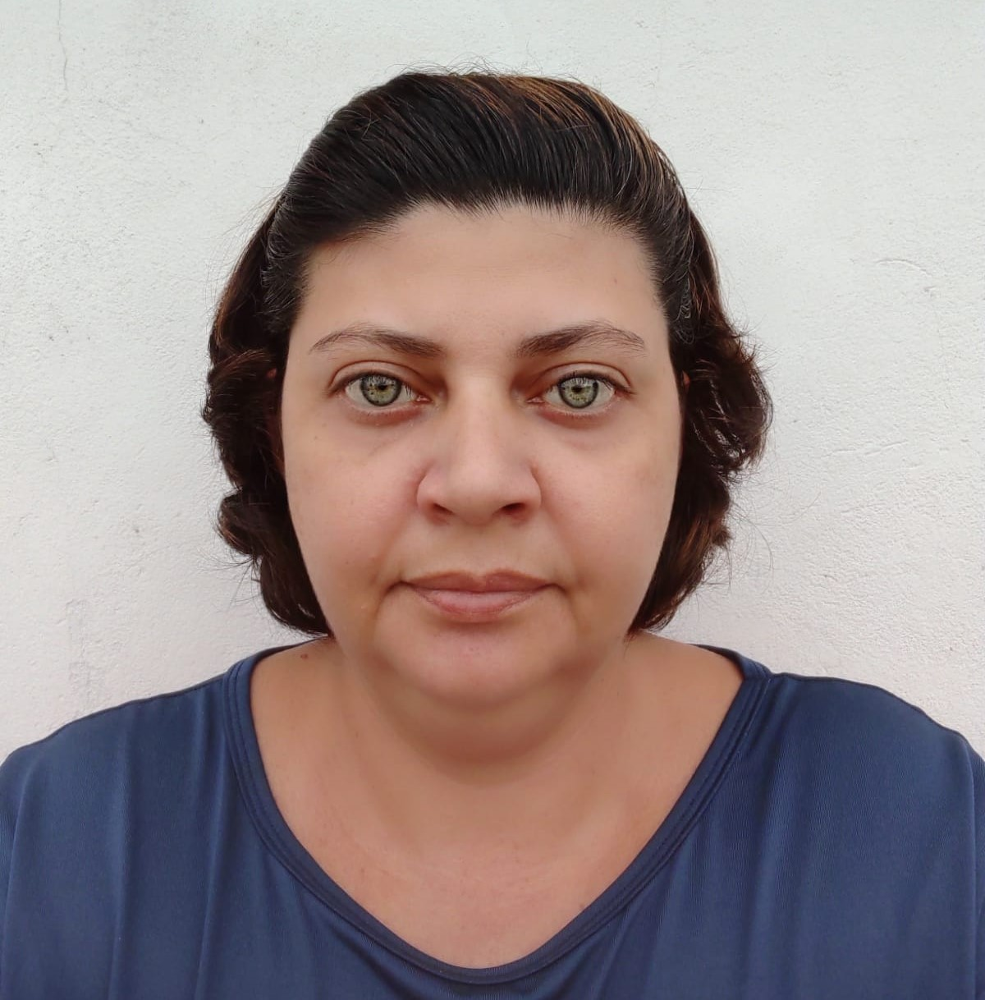

- Home
- >
- Currículo
Currículo
Dados Pessoais
Nome:
Michelle Lauriano Serbino
Data de Nascimento:
12/07/1978
Residência:
Itapetininga/SP, Brasil
Idiomas:
Português (Nativo)
Sobre Mim:
Trabalho na area de Imagenologia a mais de 10 anos, gosto do trabalho, pois estive em contato com várias pessoas nesses anos que me auxiliaram no meu aprendizado. Sempre gostei da parte tecnológica, curiosa em saber como realmente funcionavam, algumas coisas eu aprendi sozinha, desmontando e montando novamente, formatando e reinstalando programas, entre outras que aprendemos, mais algumas vezes davam errado e por essa razão e para fazer da forma certa que decidi fazer a faculdade de análise e desenvolvimento de sistemas, onde eu aprendi e aprendo novas linguagens de programação e muito mais todos os dias.
Educação
Julho/2021 - Em andamento
Análise e Desenvolvimento de Sistemas / Tecnólogo / Fatec Itapetininga
2011 - 2013
Radiologia / Tecnólogo / Unip Sorocaba
Experiência de Trabalho
2020 - Atualmente
Função - Técnica em Radiologia - Empresa - Laboratório Itapetininga - Local - Itapetininga/SP
2010 - 2015
Função - Técnica em Radiologia - Empresa - AME Itapetininga - Local - Itapetininga/SP
Contato
Email - mikaserbino@hotmail.com
Cel - (15)98148-1295
Voltar ao início